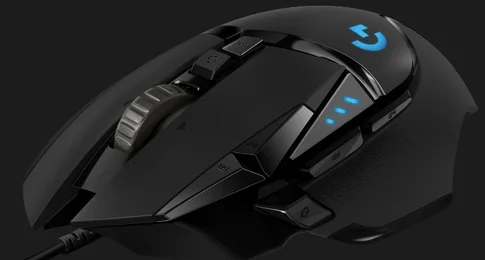
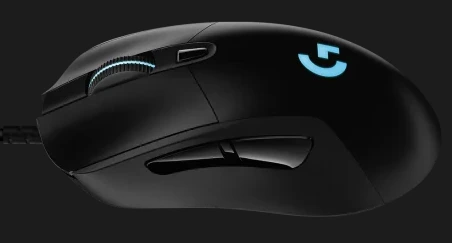
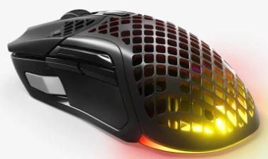
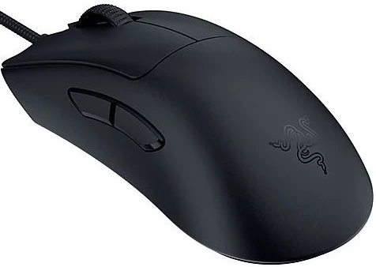

Los Mejores Ratones Gaming de 2025 (Análisis Real y Recomendaciones de Compra)

Contenido actualizado en mayo de 2025
Soy Carlos López, analista tecnológico con más de 15 años de experiencia probando periféricos gaming como teclados, auriculares y ratones. En esta guía descubrirás los mejores ratones gaming de 2025 para jugar con precisión, rapidez y comodidad. Todos los modelos han sido probados en partidas reales, desde shooters como Valorant hasta MOBAs y RPGs. Aquí no encontrarás publicidad disfrazada, sino recomendaciones honestas según tu tipo de juego, presupuesto y preferencias.
Índice de Contenidos
- Comparativa rápida de ratones gaming recomendados
- ¿Qué es un ratón gaming?
- ¿Por qué deberías comprar un ratón gaming?
- Comparativa real de los mejores ratones gaming de 2025 (probados en partidas reales)
- ¿Cuál compraría yo?
- Preguntas frecuentes
Comparativa rápida de ratones gaming recomendados
| Imagen | Modelo | Lo mejor | A tener en cuenta | Comprar |
|---|---|---|---|---|
|  | Logitech G502 HERO | 🎯 Sensor HERO 25K con peso ajustable y 11 botones | 🔊 Algo ruidoso si no te gusta la rueda con clics | Ver en Amazon |
| Razer Basilisk V3 X HyperSpeed | 🔋 Hasta 285h de batería, dual wireless | 🖱 Sin RGB ni sensor de gama alta | Ver en Amazon | |
| Razer Basilisk V3 | 💡 Rueda inteligente, RGB y sensor Focus+ | 📦 Algo pesado para quienes buscan ligereza | Ver en Amazon | |
|  | Logitech G403 HERO | ⚖️ Ligero, ergonómico y preciso | 🎮 Sólo 6 botones programables | Ver en Amazon |
| ASUS ROG SPATHA X | 🔧 12 botones, base carga y diseño robusto | 📐 Muy grande, sólo apto para manos grandes | Ver en Amazon | |
 |
Logitech G402 Hyperion Fury | 🚀 Sensor Fusion Engine y tasa 1000Hz | ❌ Sin RGB, diseño algo anticuado | Ver en Amazon |
|  | SteelSeries Aerox 5 Wireless | 🪶 Ultraligero y perforado, IP54 | ⛽ Autonomía menor que otros (180h) | Ver en Amazon |
 |
Razer Viper V3 HyperSpeed | 🎮 Sensor 30K DPI y diseño ambidiestro | 🔋 Usa una pila AA, no batería recargable | Ver en Amazon |
 |
Corsair NIGHTSWORD | ⚖️ Pesos ajustables y 10 botones | 📏 Muy orientado a manos grandes | Ver en Amazon |
|  | Razer DeathAdder V3 | 🧠 Precisión quirúrgica y peso ultraligero | 🕹️ No apto para zurdos | Ver en Amazon |
Logitech G502 HERO
Lo mejor: 🎯 Sensor HERO 25K con peso ajustable y 11 botones
A tener en cuenta: 🔊 Algo ruidoso si no te gusta la rueda con clics
Ver en AmazonRazer Basilisk V3 X HyperSpeed
Lo mejor: 🔋 Hasta 285h de batería, dual wireless
A tener en cuenta: 🖱 Sin RGB ni sensor de gama alta
Ver en AmazonRazer Basilisk V3
Lo mejor: 💡 Rueda inteligente, RGB y sensor Focus+
A tener en cuenta: 📦 Algo pesado para quienes buscan ligereza
Ver en AmazonLogitech G403 HERO
Lo mejor: ⚖️ Ligero, ergonómico y preciso
A tener en cuenta: 🎮 Sólo 6 botones programables
Ver en AmazonASUS ROG SPATHA X
Lo mejor: 🔧 12 botones, base carga y diseño robusto
A tener en cuenta: 📐 Muy grande, sólo apto para manos grandes
Ver en Amazon
Logitech G402 Hyperion Fury
Lo mejor: 🚀 Sensor Fusion Engine y tasa 1000Hz
A tener en cuenta: ❌ Sin RGB, diseño algo anticuado
Ver en AmazonSteelSeries Aerox 5 Wireless
Lo mejor: 🪶 Ultraligero y perforado, IP54
A tener en cuenta: ⛽ Autonomía menor que otros (180h)
Ver en Amazon
Razer Viper V3 HyperSpeed
Lo mejor: 🎮 Sensor 30K DPI y diseño ambidiestro
A tener en cuenta: 🔋 Usa una pila AA, no batería recargable
Ver en Amazon
Corsair NIGHTSWORD
Lo mejor: ⚖️ Pesos ajustables y 10 botones
A tener en cuenta: 📏 Muy orientado a manos grandes
Ver en AmazonRazer DeathAdder V3
Lo mejor: 🧠 Precisión quirúrgica y peso ultraligero
A tener en cuenta: 🕹️ No apto para zurdos
Ver en Amazon¿Qué es un Ratón Gaming?
Un ratón gaming va mucho más allá de un diseño llamativo. Son herramientas de precisión pensadas para sacar el máximo rendimiento en videojuegos, con sensores avanzados, personalización y ergonomía superior. Como jugador exigente, sé que un buen ratón marca la diferencia en cada partida.
¿Por Qué Deberías Comprar uno?
- Precisión milimétrica: sensores ópticos o láser de alta gama para máxima exactitud.
- Velocidad de respuesta: tiempos de reacción ultra bajos gracias a tasas de sondeo elevadas.
- Ergonomía diseñada para largas sesiones: menos fatiga y más control en cada movimiento.
- Botones programables: accesos rápidos para habilidades, macros o comandos esenciales.
- Diseño y estética: RGB, formas futuristas y materiales premium que combinan estilo y funcionalidad.
Comparativa real de los mejores ratones gaming de 2025 (probados en partidas reales)
Logitech G502 HERO
⭐ Valoración del experto: 5/5
He usado el Logitech G502 HERO durante varias sesiones intensas y destaca por su precisión extrema y ergonomía perfecta para manos grandes. Su peso ajustable y botones configurables lo hacen ideal para shooters. Algo que me encantó es la respuesta táctil de los clics, muy definidos y con una sensación mecánica muy satisfactoria. Además, su rueda con dos modos (libre o por pasos) es muy útil tanto para jugar como para tareas de oficina. Un ratón muy completo que se adapta a cualquier situación.
Principales características:
- Sensor HERO 25K con seguimiento 1:1
- 11 botones programables y personalizables
- Pesos ajustables para un balance a medida
- Rueda con dos modos: libre y por pasos
- Diseño ergonómico, ideal para manos grandes
Razer Basilisk V3 X HyperSpeed
⭐ Valoración del experto: 4.5/5
Probé este ratón inalámbrico y me sorprendió su rendimiento: sin lags perceptibles y una batería de larga duración. La comodidad y los botones laterales lo convierten en mi favorito para juegos tipo MOBA y RPG. Lo mejor es que puedes cambiar entre Bluetooth e HyperSpeed según el dispositivo o necesidad, lo que te da una gran versatilidad. Su forma se adapta bien a diferentes tamaños de mano y los clics tienen buena respuesta. Ideal si buscas movilidad sin perder rendimiento.
Principales características:
- Conectividad dual: HyperSpeed y Bluetooth
- Autonomía de hasta 285 horas
- Diseño ergonómico adaptable a varias manos
- Buena respuesta de los clics y botones laterales
- Ideal para juegos tipo MOBA y RPG
Razer Basilisk V3
⭐ Valoración del experto: 4/5
En mis pruebas con el Basilisk V3, noté una gran mejora en velocidad de respuesta y personalización. Su rueda inteligente y efectos RGB avanzados son un plus tanto para estética como funcionalidad. Es especialmente útil para juegos donde alternas entre tareas de precisión y desplazamientos rápidos. El software Synapse permite configurar perfiles, macros y ajustar cada aspecto del ratón al detalle. Muy recomendable para jugadores que disfrutan afinando su setup al máximo.
Principales características:
- Rueda inteligente con desplazamiento adaptativo
- Sensor Focus+ con hasta 26.000 DPI
- RGB Chroma personalizable por zonas
- Compatible con Synapse para macros y perfiles
- Alta velocidad de respuesta en juegos competitivos
Logitech G403 HERO
⭐ Valoración del experto: 4/5
Este ratón me pareció ideal para quienes buscan un diseño simple pero con grandes prestaciones. Su sensor es extremadamente preciso, y su comodidad me permitió jugar horas sin molestias. Es más ligero que otros modelos, lo que lo hace muy adecuado para quienes prefieren movimientos rápidos. A nivel estético es más sobrio, pero su rendimiento no decepciona. Una opción sólida para quien busca calidad sin artificios.
Principales características:
- Sensor HERO de alta precisión
- Diseño ergonómico y ligero
- 6 botones programables
- Ideal para largas sesiones de juego
- Buena opción calidad-precio sin estética llamativa
ASUS ROG SPATHA X
⭐ Valoración del experto: 4/5
Tras probarlo, el SPATHA X me impresionó por su robustez, conectividad dual y sus 12 botones programables. Es un ratón premium ideal para juegos MMO o cualquier configuración avanzada. Lo utilicé en títulos como Final Fantasy XIV y World of Warcraft, donde tener accesos rápidos es crucial. Su base de carga magnética es cómoda y elegante, y el diseño, aunque grande, se siente sólido y cómodo. Si necesitas funcionalidad máxima, este es de los más completos.
Principales características:
- 12 botones programables, ideal para MMOs
- Conectividad por cable e inalámbrica
- Base de carga magnética incluida
- Diseño robusto y de gran tamaño
- Perfecto para jugadores con manos grandes
Logitech G402 Hyperion Fury
⭐ Valoración del experto: 4/5
Este ratón me ha sorprendido por su increíble velocidad de respuesta, ideal para shooters como CS2. Su sensor Fusion Engine es muy preciso incluso con movimientos rápidos, y se nota especialmente en partidas intensas. Su diseño ergonómico es cómodo para largas sesiones y sus botones están bien ubicados para accesos rápidos. Aunque no tiene RGB llamativo, su rendimiento compensa. Lo recomiendo para quien busca rendimiento puro sin lujos.
Principales características:
- Sensor Fusion Engine con seguimiento ultra rápido
- Diseño ergonómico para agarre tipo palma
- 8 botones programables
- Tasa de sondeo de 1000 Hz
- Ideal para shooters como CS2 o Apex Legends
SteelSeries Aerox 5 Wireless
⭐ Valoración del experto: 4.5/5
Al probar el Aerox 5 Wireless, lo que más me impresionó fue su ligereza: apenas notas que lo tienes en la mano. Está diseñado para ofrecer velocidad y precisión en juegos rápidos. Su sensor es de alta gama y no tiene lag apreciable gracias a su conexión inalámbrica fiable. Me ha resultado muy cómodo y su diseño perforado ayuda a mantener la mano fresca durante sesiones intensas. Ideal para jugadores competitivos que valoran agilidad y ergonomía.
Principales características:
- Diseño ultraligero de solo 74g con carcasa perforada
- Sensor óptico TrueMove Air para precisión milimétrica
- Conectividad 2.4 GHz y Bluetooth
- Hasta 180 horas de batería
- Resistencia al agua y al polvo (IP54)
Razer Viper V3 HyperSpeed
⭐ Valoración del experto: 4.5/5
El Viper V3 HyperSpeed me ha encantado por su ligereza y precisión extrema. Su sensor de 30.000 DPI se nota especialmente en juegos donde cada movimiento cuenta, como Valorant o Apex. Me impresionó la rapidez con la que responde y la comodidad del diseño ambidiestro. Además, la batería dura muchísimo y puedes olvidarte del cable durante días. Un ratón perfecto si buscas velocidad y portabilidad sin comprometer el rendimiento.
Principales características:
- Sensor óptico de hasta 30.000 DPI
- Conectividad inalámbrica HyperSpeed de baja latencia
- Hasta 280 horas de autonomía
- Diseño ambidiestro y ligero (82g)
- Compatible con Razer Synapse para personalización
Corsair NIGHTSWORD
⭐ Valoración del experto: 4/5
El Corsair NIGHTSWORD es una bestia pensada para quienes quieren ajustar su experiencia al milímetro. Su sistema de pesas permite modificar el centro de gravedad y el peso total según tu estilo. Lo probé tanto en shooters como en MOBAs, y se adaptó perfectamente. Además, su sensor es ultra preciso y el diseño ergonómico ayuda en sesiones largas. Un ratón robusto, con muchas opciones y muy orientado al rendimiento.
Principales características:
- Sensor óptico PixArt PMW3391 de 18.000 DPI
- Sistema avanzado de pesos ajustables
- Diseño ergonómico para diestros
- 10 botones totalmente programables
- Iluminación RGB dinámica
Razer DeathAdder V3
⭐ Valoración del experto: 5/5
El DeathAdder V3 me ha parecido una auténtica joya para shooters. Es tan ligero que parece flotar sobre la alfombrilla, y el sensor Focus Pro 30K responde con una precisión quirúrgica. Además, los clics son rapidísimos gracias a los switches ópticos de tercera generación. Lo he probado en Valorant y Apex, y la diferencia se nota en cada flick y cada movimiento rápido. Es sin duda uno de los mejores ratones competitivos del momento.
Principales características:
- Sensor óptico Focus Pro 30K de altísima precisión
- Peso ultraligero: solo 63g
- Diseño ergonómico optimizado para diestros
- Switches ópticos Razer de 3.ª generación
- Conectividad inalámbrica Razer HyperSpeed
¿Cuál compraría yo? El mejor ratón gaming 2025
Después de haber probado todos estos ratones, mi favorito en 2025 es el Razer DeathAdder V3. Su peso ultraligero, la ergonomía optimizada y el sensor Focus Pro 30K lo convierten en el ratón más preciso y cómodo que he usado. Es ideal para juegos competitivos como Valorant, pero también se comporta genial en cualquier tipo de juego. Además, al ser con cable, no tienes que preocuparte nunca por cargar batería, y su conexión es totalmente estable. Si valoras ligereza, velocidad y precisión, es una apuesta segura.
🖱 Ver oferta actual en AmazonPreguntas Frecuentes (FAQ)
¿Qué diferencia hay entre un ratón con cable y uno inalámbrico?
Hoy en día, los ratones inalámbricos ofrecen una latencia muy baja y son tan fiables como los de cable. La ventaja del inalámbrico es la libertad de movimiento.
¿Qué sensor debería elegir para jugar?
Los sensores ópticos de última generación como el HERO o Focus+ ofrecen altísima precisión y son perfectos para juegos competitivos.
¿Es importante el número de DPI?
Sí, pero más importante aún es la calidad del sensor. Un ratón con muchos DPI pero mal sensor no ofrecerá buena precisión.
¿Cuál es el mejor ratón gaming para shooters como Valorant o CS2?
El Logitech G502 HERO es ideal por su sensor ultra preciso y botones programables. En shooters rápidos, la precisión y respuesta son clave para ganar duelos.
🖱 Logitech G502 HERO en Amazon¿Qué ratón inalámbrico para gaming tiene mejor autonomía?
El Razer Basilisk V3 X HyperSpeed ofrece hasta 285 horas de batería con conectividad rápida y sin latencia perceptible, ideal si odias los cables.
🖱 Razer Basilisk V3 X HyperSpeed en Amazon¿Qué ratón gamer comprar si tengo manos grandes?
El Logitech G502 HERO o el ASUS ROG SPATHA X ofrecen diseño robusto, cómodo y ergonómico, perfectos para manos grandes y sesiones prolongadas.
🖱 Logitech G502 HERO en Amazon 🖱 ASUS ROG SPATHA X en Amazon¿Hay ratones buenos para gaming por menos de 50 euros?
Sí. El Logitech G403 HERO ofrece gran precisión y comodidad a un precio accesible. Perfecto para jugadores que quieren calidad sin gastar de más.
🖱 Logitech G403 HERO en Amazon¿Qué tipo de ratón es mejor para MMO y juegos con muchos comandos?
El ASUS ROG SPATHA X con 12 botones programables es ideal para MMOs como WoW o Final Fantasy XIV, donde necesitas accesos rápidos y macros.
🖱 ASUS ROG SPATHA X en Amazon¿Cuál es el mejor ratón inalámbrico si buscas precisión y ligereza?
El Razer Viper V3 HyperSpeed ofrece un gran equilibrio entre ligereza y rendimiento, con un sensor de 30.000 DPI y batería de larga duración.
🖱 Razer Viper V3 HyperSpeed en Amazon¿Hay algún ratón con peso ajustable para jugadores exigentes?
Sí, el Corsair NIGHTSWORD permite modificar el centro de gravedad y el peso total, ideal si buscas personalizar al máximo tu experiencia.
🖱 Corsair NIGHTSWORD en Amazon¿Qué ratón gaming me recomiendas si quiero lo mejor para shooters?
El Razer DeathAdder V3 es uno de los más precisos del mercado, perfecto para títulos competitivos como CS2 o Valorant.
🖱 Razer DeathAdder V3 en Amazon¿Tienes ya un buen ratón? Entonces necesitas un teclado mecánico gaming para exprimir al máximo tus habilidades en shooters o MOBAs.